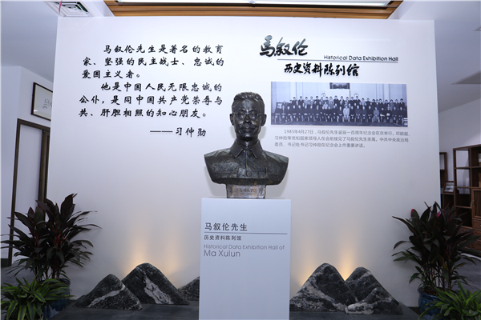
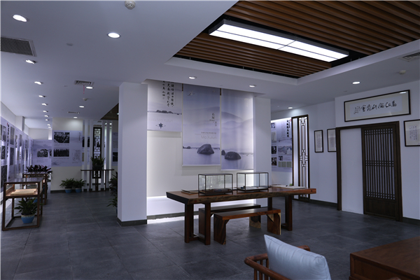
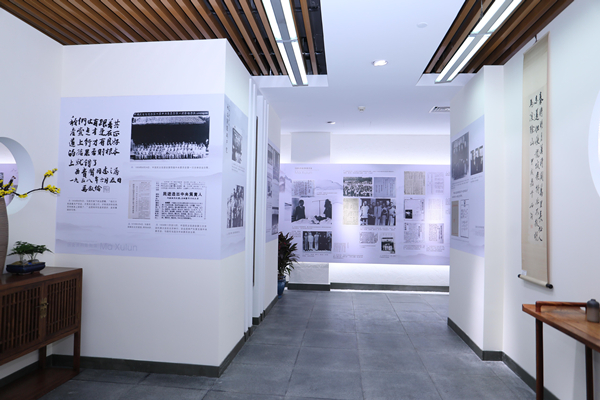

马叙伦历史资料陈列馆

马叙伦历史资料陈列馆内部展陈1

马叙伦历史资料陈列馆内部展陈2
马叙伦历史资料陈列馆位于杭州师范大学图书馆一楼，在民进中央、省委会、杭州市统战部关心指导下，在杭师大支持下，于2018年开始创建,2019年正式开馆。场馆面积194平方米，由“追求真理，思想每随时代进”“创建民进，永远紧跟共产党”“满腔热忱，参与协商建国”“呕心沥血，献身新中国教育”“石屋流香，学术成就丰硕”“风范长存，马叙伦与杭州”六个部分组成，现陈列馆展陈马老生平事迹历史资料图片和部分个人著作、书法作品、生前使用实物等，配有民进会员义务讲解队和杭师大学生义务讲解团。截至2022年3月，马叙伦历史资料陈列馆已接待浙江、上海、广东、安徽、 江苏等各地民进组织3000余人次参观学习。